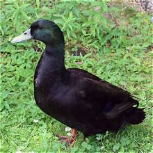

Meet Our Animals
We currently have five breeds of chickens, two breeds of ducks, and quail. Later in the week, we will be adding guinea fowl to the homestead.
These are reference photos, not our own animals.
Animal Gallery





Why We Chose These Animals
- Budget-friendly choices
- Many were gifted to us
- Similar feed needs, with some variations
- A source of protein for our family
- Multiple food sources
- Guinea fowl to help control ticks